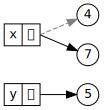
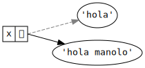
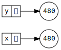
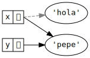
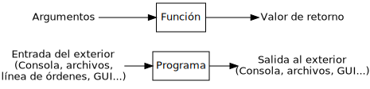

La programación imperativa es un paradigma de
programación basado en los conceptos de
«estado» y
«sentencia».
Un programa imperativo está formado por una secuencia de
sentencias
El programa imperativo va pasando por diferentes
estados a medida que se van ejecutando las sentencias
que lo forman.
Por tanto, una sentencia es una instrucción que
cambia el estado del programa.
El fundamento teórico de la programación
imperativa son las máquinas de Turing y la arquitectura
de Von Neumann, que son modelos abstractos de cómo
funciona un ordenador.
El modelo de ejecución de un programa imperativo
es el de una máquina de estados, es decir, un
dispositivo abstracto que va pasando por diferentes estados a medida que
el programa va ejecutándose.
El concepto de «tiempo» también es muy
importante en programación imperativa, ya que el estado del programa va
cambiando a lo largo del tiempo conforme se van ejecutando las
sentencias que lo forman.
A su vez, el comportamiento del programa depende del estado en el
que se encuentre.
Eso significa que, ante los mismos datos de entrada, una función en
programación imperativa puede devolver valores distintos en
momentos distintos.
En programación funcional, en cambio, el comportamiento de una
función no depende del momento en el que se ejecute, ya que siempre
devolverá los mismos resultados ante los mismos datos de entrada
(transparencia referencial).
Eso significa que, para modelar el comportamiento de un programa
imperativo, ya no nos vale el modelo de sustitución que
hemos estado usando hasta ahora en programación funcional.
1.2
Sentencias
Las sentencias son las instrucciones principales
que componen un programa imperativo.
La ejecución de una sentencia cambia el estado interno
del programa provocando uno de estos
efectos:
Cambiar las coordenadas del proceso asociado al
programa, normalmente mediante la llamada sentencia de
asignación.
Cambiar el flujo de control del programa,
haciendo que la ejecución se bifurque (salte) a otra parte del
mismo.
La principal diferencia entre una sentencia y una
expresión es que las sentencias no denotan ningún valor, sino
que son órdenes a ejecutar por el programa para producir un
efecto.
Las expresiones se evalúan y devuelven un
valor.
Las sentencias se ejecutan para producir un
efecto.
En un lenguaje funcional puro:
Un programa es una expresión.
Ejecutar un programa consiste en evaluar dicha expresión usando
las definiciones predefinidas del lenguaje y las definidas por el
programador.
Todo son expresiones, excepto las sentencias que producen el
efecto de crear ligaduras (como las sentencias de definición, o
de importación de módulos).
Evaluar una expresión no produce ningún otro efecto salvo el de
calcular su valor.
Las expresiones devuelven siempre el mismo valor (tienen
transparencia referencial).
El comportamiento de un programa se puede modelar usando el
modelo de sustitución.
En cambio, en un lenguaje imperativo:
Los programas están formados por sentencias que, al ejecutarse,
van cambiando el estado del programa.
El valor de una expresión depende del estado en el que se
encuentre el programa en el momento de evaluar dicha expresión (no hay
transparencia referencial).
Evaluar una expresión puede provocar otros efectos (los llamados
efectos laterales) más allá de calcular su valor.
En muchos lenguajes imperativos es posible colocar una expresión
donde debería ir una sentencia (aunque no al revés).
Esto sólo resultaría útil en caso de que la evaluación de la
expresión provocara efectos laterales. De lo contrario, el
valor de la evaluación se perdería sin más y no habría servido de nada
calcularlo.
1.3
Secuencia de sentencias
Un programa imperativo está formado por una secuencia de
sentencias.
Ejecutar un programa imperativo es provocar los cambios
de estado que dictan las sentencias en el
orden definido por el programa.
Las sentencias del programa van provocando
transiciones entre estados, haciendo que la máquina
pase de un estado al siguiente.
Para modelar el comportamiento de un programa imperativo
tendremos que saber en qué estado se encuentra el programa, para lo cual
tendremos que seguirle la pista desde su estado inicial al estado
actual.
Eso básicamente se logra «ejecutando» mentalmente el programa
sentencia por sentencia y llevando la cuenta de los cambios que van
produciendo conforme se van ejecutando.
Al decir que un programa imperativo está formado por una
secuencia de sentencias, estamos diciendo que importa mucho el
orden en el que están colocadas las sentencias dentro del
programa.
En general, un programa imperativo se comportará de forma
diferente si se cambia el orden en el que se ejecutan sus
sentencias.
Por eso, si se ejecuta A antes que B, el programa
seguramente no producirá el mismo efecto que si se ejecuta B
antes que A.
Por ejemplo, muchas veces el funcionamiento de una sentencia
B depende del efecto producido por una sentencia A
anterior. Por tanto, en ese caso, A debería ejecutarse antes
que B.
2
Asignación destructiva
2.1
Valores y referencias
Todos los valores se almacenan en una zona de la
memoria conocida como el montículo.
El valor se guardará en el montículo a partir de una determinada
dirección de memoria y ocupando el espacio que se necesite en función
del tamaño que tenga el valor.
Dado un determinado valor, se denomina referencia al
valor a un localizador que permite identificar, localizar y
acceder a ese valor dentro del montículo.
Cada vez que aparece un valor nuevo dentro del programa, el
intérprete lo guarda dentro del montículo y crea una referencia al
mismo.
En tal caso, se dice también que «la referencia
apunta al valor».
A partir de ese momento, el valor se manipulará siempre a través
de esa referencia, la cual sirve como localizador y como forma de
acceder a ese valor en la memoria.
Por tanto, para poder manipular un valor, necesitamos disponer de
la referencia a dicho valor.
Por ejemplo, la expresión 500 representa
al valor 500 que está almacenado en el montículo pero, en
realidad, al evaluar la expresión, el intérprete no devuelve ese valor,
sino una referencia al valor, a través de la cual podremos acceder al
valor.
En la mayoría de los lenguajes de programación, esa referencia
coincide con la dirección de comienzo de la zona que
ocupa ese valor dentro del montículo, aunque ese es un detalle de
funcionamiento interno del intérprete que no es necesario conocer.
Por ese misma razón, en la mayoría de los lenguajes, las referencias
son únicas y constantes para cada valor:
Que sean únicas quiere decir que dos valores distintos tendrán
referencias distintas.
Que sean constantes quiere decir que la referencia a un valor
nunca cambia durante la vida del mismo.
No está de más recordar que los programas no pueden manipular
valores directamente (ya que los valores son entidades abstractas), sino
que sólo pueden manipular representaciones de ese
valor.
Por ejemplo, un programa no puede manipular el número
cinco, ya que los números sólo existen de forma ideal
en el mundo abstracto.
Sin embargo, el programa puede manipular expresiones como 2+3
o 5, que
representan (o denotan) a ese valor
cinco.
Por otra parte, 5 es la
expresión canónica del valor cinco.
Esa expresión canónica representa al valor dentro del programa,
ya que es, además, la forma normal de todas las expresiones que
denotan el mismo valor.
Pero aunque ya sabemos que lo que se manipula y se almacena en la
memoria no es el valor en sí, sino su expresión canónica, nosotros, para
simplificar, siempre vamos a hablar de manipular y almacenar
valores, aunque no sea del todo correcto.
A su vez, los valores (o, mejor dicho, sus expresiones canónicas)
se almacenan en la memoria del ordenador usando una
codificación apropiada al tipo de cada valor.
Por ejemplo, un número entero como el 5 se puede
almacenar usando una codificación binaria en complemento a dos, mientras
que una cadena como 'hola'
se podría almacenar como una secuencia de caracteres Unicode.
Por tanto, cuando se almacena un valor en la memoria (o, mejor
dicho, cuando se almacena su expresión canónica), ocupará un espacio que
dependerá del valor que sea y del tipo que tenga.
2.2
Variables
Una variable es un lugar en la
memoria donde se puede almacenar la
referencia a un valor.
En tal caso, se puede decir que:
«La variable contiene (o almacena) una referencia al valor».
«La variable hace referencia al valor».
«La variable apunta al valor».
Otras formas menos correctas (pero que se utilizan con frecuencia
por abuso del lenguaje) serían:
«La variable contiene (o almacena) el valor».
«La variable vale el valor».
«La variable es una referencia al valor».
Aunque la referencia sea única para cada valor, podemos tener
varias referencias apuntando a la vez al mismo valor, una por cada
variable que contenga la referencia al valor. Por esto se puede hablar
de «una referencia al valor» y no sólo de «la
referencia al valor».
El contenido de una variable (es decir, la referencia
que contiene) puede cambiar durante la ejecución del
programa, haciendo que la variable pueda «apuntar» (o
«hacer referencia») a distintos valores durante la ejecución
del programa.
A partir de ahora, un identificador no se va a ligar directamente
con un valor, sino que tendremos:
Una ligadura entre un identificador y una
variable.
La variable contiene una referencia al
valor.
Este comportamiento es el propio de los lenguajes de
programación orientados a objetos (como Python o
Java), que son los lenguajes imperativos más usados a día de
hoy.
Otros lenguajes imperativos más «clásicos» (como C o Pascal) se
comportan, en general, de forma diferente.
En esos lenguajes, los valores se almacenan directamente dentro
de las variables, es decir, que las variables son contenedores que
almacenan valores, no referencias a los valores.
Por tanto, el compilador tiene que reservar espacio suficiente en
la memoria para cada variable del programa, de manera que dicha variable
pueda contener un valor de un determinado tamaño y que ese valor «quepa»
dentro de la variable.
De todos modos, algunos lenguajes de programación tienen un
comportamiento híbrido, que combina ambas técnicas:
En Java, existen tipos primitivos (cuyos valores se
almacenan directamente en las variables) y tipos referencia
(cuyos valores se almacenan en el montículo y las variables contienen
referencias a esos valores).
En C, los valores se almacenan dentro de las variables, pero es
posible reservar memoria dinámicamente dentro del montículo y almacenar
en una variable un puntero al comienzo de dicha zona de
memoria, lo que permite crear y destruir datos en tiempo de
ejecución.
2.3
Estado
La ligadura es la asociación que se establece
entre un identificador y una variable.
El estado de una variable es el valor al que
hace referencia una variable en un momento dado.
Por tanto, el estado es la asociación que se establece entre una
variable y un valor (es decir, la referencia que contiene la variable y
que apunta al valor).
Tanto las ligaduras como los estados pueden cambiar durante la
ejecución de un programa imperativo.
El estado de un programa es el conjunto de los
estados de todas sus variables (más cierta información auxiliar
gestionada por el intérprete).
2.4
Marcos en programación imperativa
Hasta ahora, los marcos contenían ligaduras entre identificadores
y valores.
A partir de ahora, un marco contendrá:
Las ligaduras entre identificadores y
variables.
El estado de cada variable, es decir, la
referencia que contiene cada variable en un momento dado.
Para simplificar la representación gráfica, generalmente dibujaremos
cada identificador al lado de su correspondiente variable (representando
la ligadura), y la variable apuntando a su valor en el
montículo (representando el estado).
El montículo como tal normalmente no lo dibujaremos, ya que
sabemos que los valores se almacenan en él.
Igualmente, a veces tampoco dibujaremos el marco si se
sobreentiende cuál es (o si no tiene importancia en ese
momento).
Incluso, a veces, llegado el caso, también dibujaremos el valor
directamente almacenado en la variable que le apunta, para simplificar
(aunque sabemos que eso no es lo que ocurre en Python).
2.5
Sentencia de asignación
La forma más básica de cambiar el estado de una variable es
usando la sentencia de asignación.
Es la misma instrucción que hemos estado usando hasta ahora para
ligar valores a identificadores, pero ahora, en el paradigma imperativo,
tiene otro significado:
x =4
Esa instrucción ahora se lee así:
«Asigna el valor 4 a la variable
x»
y el efecto que produce es el de almacenar, en la variable ligada al
identificador x, la
referencia del valor 4 almacenado en
el montículo.
A partir de este momento, se dice (aunque no esté muy bien dicho)
que «la variable xvale4».
Como se ve, por economía del lenguaje se dice:
«Asigna el valor 4 a la variable
x»
o también (menos frecuente pero algo más correcto):
«Almacena el valor 4 en la
variable ligada al identificador x»
en lugar de la forma más correcta, pero menos frecuente:
«Almacena una referencia al valor 4 en la
variable ligada al identificador x».
Aunque esto simplifica las cosas a la hora de hablar, hay que
tener cuidado, porque llegado el momento es posible tener:
Varios identificadores distintos ligados a la misma variable
(ocurre en algunos lenguajes como PHP, aunque no en Python ni
Java).
Un mismo identificador ligado a distintas variables en diferentes
puntos del programa.
Varias variables apuntando al mismo valor.
Podemos ejecutar varias sentencias de asignación sobre una misma
variable en diferentes puntos del programa, lo que permite que una
variable pueda cambiar su valor durante la ejecución del
programa.
Se dice que la asignación es destructiva porque,
al cambiarle el valor a una variable, el nuevo valor sustituye a
su valor anterior en esa variable.
Por ejemplo, si tras haber ejecutado la anterior asignación x =4,
ahora hacemos:
x =9
el valor de la variable x pasa
ahora a ser 9, sustituyendo
el valor 4
anterior.
Por tanto, eso significa que la variable x puede
hacer referencia a distintos valores dependiendo del momento en el que
se compruebe su valor.
De hecho, la asignación anterior crea un instante que divide el
flujo temporal de ejecución en dos momentos:
Antes de ejecutar la asignación, x
vale 4.
Después de ejecutar la asignación,
x vale 9.
Cada nueva asignación provoca un cambio de estado en el
programa.
En el ejemplo anterior, el programa pasa de estar en un estado en
el que la variable x vale 4 a otro en el
que la variable vale 9.
Al final, un programa imperativo se puede reducir a una
secuencia de asignaciones realizadas en el orden
dictado por el programa.
Este modelo de funcionamiento está estrechamente ligado a la
arquitectura de un ordenador: hay una memoria formada por celdas que
contienen datos que pueden cambiar a lo largo del tiempo según dicten
las instrucciones del programa que controla al ordenador.
2.5.0.1 Un ejemplo completo
Cuando se ejecuta la siguiente instrucción:
x =2500
ocurre lo siguiente:
Se crea el valor 2500 en el
montículo.
En determinadas situaciones, no crea un nuevo valor si ya había otro
exactamente igual en el montículo, pero éste no es el caso.
El intérprete resuelve el identificador x (que aquí
consiste en determinar a qué variable está ligado el identificador x) consultando el entorno.
Si no existía dicha variable, la crea en ese momento y la liga a
x en el marco actual.
Almacena en la variable una referencia al valor.
2.6 La
sentencia del
En Python existe la sentencia contraria a la asignación, es
decir, una sentencia que elimina
variables.
Para ello, se usa la palabra clave del seguido de
una expresión que identifique a la variable (que normalmente será un
simple identificador):
>>> x =25>>> x25>>>del x>>> xTraceback (most recent call last): File "<stdin>", line 1, in<module>NameError: name 'x'isnot defined
Al hacer del x, se
elimina la variable ligada al identificador x en el marco
donde está almacenada la variable.
Tras eliminar la variable, se elimina también, en ese mismo
marco, el identificador x y la ligadura que existía entre
este y la variable, puesto que ya no tiene sentido que sigan existiendo
al no existir la variable.
2.7
Alias de variables y valores idénticos
Cuando una variable que tiene un valor se asigna a otra, ambas
variables pasan a compartir el mismo valor,
produciéndose un fenómeno conocido como alias de
variables.
x = (66, 77, 88, 99)y = x # x se asigna a y; ahora y tiene el mismo valor que x
Esto se debe a que las variables almacenan
referencias a los valores, no los valores en sí mismos
(éstos se almacenan en el montículo).
Las dos variables almacenan la misma referencia (o, dicho de otra
forma, son dos referencias al mismo valor).
En tal caso, decimos que x e y son
datos idénticos (no sólo iguales), ya que
apuntan al mismo valor en el montículo.
2.8
Recolección de basura
Un valor se vuelve inaccesible cuando no hay
ninguna referencia que apunte a él.
Eso ocurre cuando no queda ninguna variable que contenga una
referencia a ese valor.
En tal caso, el intérprete lo marca como candidato para ser
eliminado.
Cada cierto tiempo, el intérprete activa el recolector de
basura, que es un componente que se encarga de liberar de la
memoria a los valores que están marcados como candidatos para ser
eliminados.
Por tanto, el programador Python no tiene que preocuparse de
gestionar manualmente la memoria ocupada por los valores que componen su
programa.
Por ejemplo:
tupla1 = (1, 2, 3) # crea la tupla y guarda una referencia a ella en tupla1tupla2 = tupla1 # almacena en tupla2 la referencia que hay en tupla1
A partir de ahora, ambas variables apuntan al mismo valor y, por
tanto, decimos que el valor tiene dos referencias, o que hay dos
referencias apuntándole.
del tupla1 # elimina una referencia pero el valor aún tiene otradel tupla2 # elimina la otra referencia y ahora el valor es inaccesible
Como ya no hay ninguna referencia apuntándole, se marca como
candidato a ser eliminado y, por tanto, la próxima vez que se
active el recolector de basura, se eliminará la tupla del
montículo.
2.9
Evaluación de expresiones con variables
Al evaluar expresiones, las variables actúan de modo similar a
las ligaduras de la programación funcional pero, ahora, los valores de
las variables pueden cambiar a lo largo del tiempo, por lo que deberemos
seguirle la pista a los cambios que sufran dichas
variables.
Todo lo visto hasta ahora sobre marcos, ámbitos, sombreado,
entornos, etc. se aplica igualmente a las variables.
Por ejemplo:
>>> x =4>>> y =3>>> x * y +5# esta expresión vale 17 porque 'x' vale 4 y 'y' vale 317>>> x =9>>> x * y +5# la misma expresión ahora vale 32 porque 'x' vale 932
Los parámetros de las funciones (es decir, de las expresiones
lambda) también son ahora variables en el paradigma imperativo.
Por tanto, si tenemos el siguiente código:
cuadrado =lambda x: x **2total = cuadrado(4)
el parámetro x es ahora un identificador que se ligará a
una variable, la cual almacenará una referencia a su argumento
correspondiente durante las llamadas a la función.
Por tanto, en la llamada cuadrado(4), se
guardará en el marco de la expresión lambda una ligadura entre el
identificador x y una variable que se creará y se
almacenará en el mismo marco, y esa variable contendrá una referencia al
argumento 4.
2.10
Tipado estático vs. dinámico
Cuando una variable tiene asignado un valor, al ser usada en una
expresión actúa como si fuera ese valor.
Como cada valor tiene un tipo asociado, también podemos hablar
del tipo de una variable.
El tipo de una variable es el tipo del valor al que
hace referencia la variable.
Si a una variable se le asigna otro valor de un tipo distinto al
del valor anterior, el tipo de la variable cambia y pasa a ser el del
nuevo valor que se le ha asignado.
Eso quiere decir que el tipo de una variable podría
cambiar durante la ejecución del programa.
A este enfoque se le denomina tipado
dinámico.
En esos lenguajes, no existen mecanismos que permitan asignar de
manera fija y única el tipo de una variable de forma que siempre sea el
mismo durante toda la ejecución del programa.
Así, los traductores de un lenguaje dinámico no tratan de asignar
un tipo a las variables durante la fase de compilación o al empezar a
leer el código fuente del programa, sino que el tipo es una propiedad de
la variable que va cambiando a medida que se van ejecutando las
instrucciones del programa, de forma dinámica.
Por esta razón, en general, en un lenguaje dinámico no se puede
determinar el tipo de una variable simplemente leyendo el código fuente
del programa, sin ejecutarlo.
Asimismo, en esos lenguajes tampoco es posible, en general,
deteminar de antemano (sin ejecutar el programa) la signatura de las
funciones, es decir, el tipo de sus parámetros y el de su valor de
retorno, ya que todos ellos también son variables.
Por tanto, es la propia función la que, durante una llamada a la
misma, se encarga de comprobar en tiempo de ejecución si los argumentos
de entrada que le han pasado en la llamada son del tipo
correcto.
Por ejemplo, en la siguiente función:
f =lambda x, y: x + y
no están determinados de antemano los tipos de los parámetros ni el
tipo de retorno, por lo que dicha función podría admitir argumentos de
cualquier tipo siempre que soporten el operador +.
Definición:
Lenguajes de tipado dinámico:
Son aquellos que permiten que el tipo de una
variable cambie durante la ejecución del programa y en
los que, por tanto, en general, no es posible determinar de antemano el
tipo de la variable sin ejecutar el programa. Eso incluye también la
signatura de las funciones, es decir, el tipo de sus parámetros y su
tipo de retorno.
En contraste con los lenguajes de tipado dinámico, existen los
llamados lenguajes de tipado estático.
En un lenguaje de tipado estático, el tipo de una variable se
define una sola vez (en la fase de compilación o justo al empezar a
ejecutarse el programa), y no puede cambiar durante la
ejecución del mismo.
Definición:
Lenguajes de tipado estático:
Son aquellos que asocian forzosamente y de forma única un tipo a cada
variable del programa antes de comenzar a ejecutarse y
prohíben que dicho tipo cambie durante
la ejecución del mismo.
Por tanto, en un programa escrito en un lenguaje de tipado
estático es posible determinar el tipo de una variable simplemente
leyendo el código fuente del mismo, sin necesidad de
ejecutarlo.
Estos lenguajes disponen de instrucciones que permiten
declarar de qué tipo serán los datos que se pueden asignar a
una variable.
Por ejemplo, en Java podemos hacer:
String x;
con lo que declaramos que a x
sólo se le podrán asignar valores de tipo String desde el
primer momento y a lo largo de toda la ejecución del programa.
A veces, se pueden realizar al mismo tiempo la declaración del
tipo y la asignación del valor:
String x ="Hola";
Otros lenguajes de tipado estático disponen de un mecanismo
conocido como inferencia de tipos, que permite
deducir automáticamente el tipo de una variable.
Por ejemplo, en Java podemos hacer:
var x ="Hola";
El compilador de Java deduce que la variable x debe ser de tipo String porque se
le está asignando una cadena (el valor "Hola").
La inferencia de tipos permite el tipado estático sin necesidad
de usar declaraciones explícitas de tipos.
Aún así, la inmensa mayoría de los lenguajes estáticos con
inferencia de tipos disponen de mecanismos de declaración explícita de
tipos, ya que a veces es necesario «ayudar» al traductor a deducir el
tipo de una variable.
Así ocurre, por ejemplo, con algunos lenguajes funcionales como
Haskell o ML.
En los lenguajes de tipado estático, el traductor es capaz de
comprobar si existen errores de tipos antes de empezar la
ejecución del programa, es decir, durante la fase de
compilación (si es un compilador) o justo al empezar a leer el código
fuente (si es un intérprete).
Por ejemplo, el compilador de Java podría detectar, en tiempo de
compilación y sin tener que ejecutarlo, que el siguiente trozo de código
es erróneo, ya que se intenta asignar un valor de tipo cadena a una
variable declarada de tipo entero:
int x;x ="Hola";
Al ser un lenguaje de tipado estático, el compilador conoce (o
deduce) en tiempo de compilación el tipo de la variable
x y el del valor "Hola",
sabe que son tipos diferentes (int y String,
respectivamente) y concluye que no es correcto asignar ese valor a esa
variable puesto que sus tipos son incompatibles, generando un
error de tipos en la línea 3 y deteniendo la generación
del código objeto.
De igual forma, el compilador detecta en tiempo de compilación
que la siguiente expresión no es correcta, ya que se intenta multiplicar
un número con una cadena, algo que no está permitido en Java:
x *"Hola"
Por contra, el lenguaje Python es un lenguaje dinámico, por lo
que el intérprete desconoce de antemano el tipo de las variables, ya que
éste va cambiando sobre la marcha a medida que se va ejecutando el
programa:
x =4# Ahora x es de tipo intx ='Hola'# Ahora x es de tipo str
Por tanto, el intérprete no puede saber de antemano (antes de
ejecutar el programa) si la siguiente expresión es correcta o
incorrecta:
x /2# Se puede dividir un entero, pero no una cadena
Sólo podrá saberlo cuando esté ejecutando el programa y esté a punto
de evaluar la expresión, porque hasta entonces no sabrá cuál es el tipo
de la variable xen ese momento.
Normalmente, los lenguajes de tipado estático son también
lenguajes compilados y también fuertemente tipados.
Asimismo, los lenguajes de tipado dinámico suelen ser lenguajes
interpretados y a veces también son lenguajes débilmente
tipados.
Pero nada impide que un lenguaje de tipado dinámico pueda ser
compilado, por ejemplo.
Los tres conceptos de:
Compilado vs. interpretado
Tipado fuerte vs. débil
Tipado estático vs. dinámico
son diferentes aunque están estrechamente relacionados.
2.11
Asignación compuesta
Los operadores de asignación compuesta nos
permiten realizar operaciones sobre una variable y luego asignar el
resultado a la misma variable.
con la condición de que tiene que haber tantos identificadores como
expresiones.
Por ejemplo:
x, y =10, 20
asigna el valor 10 a x y el valor 20 a y.
Lo interesante de la asignación múltiple es que todas las
asignaciones se llevan a cabo a la vez, en paralelo,
no una tras otra.
Por ejemplo, si quisiéramos intercambiar los valores de
x e y sin asignación múltiple, tendríamos que
usar una variable auxiliar que almacenara el valor de una de las
variables para no perderlo:
aux = xx = yy = aux
En cambio, si usamos la asignación múltiple, se puede hacer
simplemente:
x, y = y, x
Lo que ocurre es que la x toma el valor que tenía
yjusto antes de ejecutar la sentencia, y
la y toma el valor que tenía xjusto
antes de ejecutar la sentencia.
Por tanto, las asignaciones que se realizan en una asignación
múltiple no se afectan entre ellas.
A la asignación múltiple también se la denomina
desempaquetado de tuplas, ya que, técnicamente, es una
asignación entre dos tuplas, como si se hubiera escrito así:
(x, y) = (10, 20)
Esto es así porque, en realidad, los paréntesis que rodean a una
tupla casi nunca son estrictamente necesarios (salvo para la tupla vacía
y para evitar ambigüedades) y, por tanto:
2, 3
es lo mismo que
(2, 3)
En consecuencia, lo que ocurre es que se desempaquetan
las dos tuplas y se asigna cada elemento de la tupla derecha a la
variable correspondiente de la tupla izquierda.
2.13
Constantes
En programación funcional no existen las variables y un
identificador sólo puede ligarse a un valor (un identificador ligado no
puede re-ligarse a otro valor distinto).
En la práctica, eso significa que un identificador ligado actúa
como un valor constante que no puede cambiar durante la ejecución del
programa.
El valor de esa constante es el valor al que está ligado el
identificador.
Pero en programación imperativa, los identificadores se ligan a
variables, que son las que realmente apuntan a los valores.
Una constante en programación imperativa sería
el equivalente a una variable cuyo valor no puede cambiar durante la
ejecución del programa.
Muchos lenguajes de programación permiten definir constantes,
pero Python no es uno de ellos.
En Python, una constante es una variable más,
pero es responsabilidad del programador no cambiar su
valor durante todo el programa.
Python no hace ninguna comprobación ni muestra mensajes de error
si se cambia el valor de una constante.
En Python, por convenio, los identificadores
ligados a una variable con valor constante se escriben con todas las
letras en mayúscula:
PI =3.1415926
El nombre en mayúsculas nos recuerda que PI es una constante, aunque nada nos
impide cambiar su valor (cosa que debemos evitar):
PI =99
Sólo es un convenio entre programadores, que no tiene por qué
cumplirse siempre.
3
Mutabilidad
3.1
Estado de un dato
Ya hemos visto que en programación imperativa es posible cambiar
el estado de una variable asignándole un nuevo valor (un nuevo
dato).
Al hacerlo, no estamos cambiando el valor en sí, sino que estamos
sustituyendo el valor de la variable por otro nuevo, mediante el uso de
la asignación destructiva.
Sin embargo, también existen valores que poseen su propio
estado interno y es posible cambiar dicho estado, no
asignando un nuevo valor a la variable que lo contiene, sino
modificando el interior de dicho valor.
Es decir: no estaríamos cambiando el estado de
la variable (haciendo que ahora contenga un nuevo valor) sino el
estado interno del propio valor al que hace referencia la
variable.
Los valores que permiten cambiar su estado interno se denominan
mutables.
3.2
Tipos mutables e inmutables
En Python existen tipos cuyos valores son inmutables y
otros que son mutables.
Un valor inmutable es aquel cuyo estado
interno NO puede cambiar durante la ejecución del
programa.
Los tipos inmutables en Python son los números (int y float), los
booleanos (bool), las
cadenas (str), las
tuplas (tuple), los
rangos (range) y los
conjuntos congelados (frozenset).
Un valor mutable es aquel cuyo estado
interno puede cambiar durante la ejecución del programa
sin cambiar su identidad.
Muchos valores mutables son colecciones de elementos
(datos compuestos o contenedores) y cambiar su
estado interno es cambiar su contenido, es decir, los
elementos que contiene.
Los principales tipos mutables predefinidos en Python son las
listas (list), los
conjuntos (set) y los
diccionarios (dict).
3.2.1
Valores inmutables
Un valor de un tipo inmutable no puede cambiar su estado interno
durante la ejecución del programa.
Si tenemos:
x =4y =5
y hacemos:
x =7
quedaría:

Lo que hace la asignación x =7
no es cambiar el contenido del valor 4, sino hacer
que la variable x contenga otro
valor distinto (el valor 4 en sí mismo
no se cambia internamente en ningún momento).
Las cadenas también son datos
inmutables y, por tanto, con ellas ocurre exactamente
igual.
Si tenemos:
x ='hola'
y luego hacemos:
x ='hola manolo'
se crea una nueva cadena y se la asignamos a la
variable x.
Es decir: la cadena 'hola'
original no se cambia (no se le añade ' manolo'
detrás), sino que la nueva sustituye a la anterior en
la variable:

Las tuplas también son datos
inmutables, por lo que, una vez creadas, no se puede cambiar su
contenido.
Por ejemplo, si tenemos una tupla (1, 2, 3)
y le concatenamos otra tupla (4, 5, 6),
el resultado es una nueva tupla creada a partir de las otras dos (que
permanecen inalteradas):
>>> x = (1, 2, 3)>>> y = (4, 5, 6)>>> z = x + y>>> z(1, 2, 3, 4, 5, 6)>>> x(1, 2, 3)>>> y(4, 5, 6)
Si ahora le asignamos otra tupla a z, ésta pasa a apuntar a la nueva
tupla, sin modificar a la anterior:
z = (7, 8, 9)
3.2.1.1 Secuencias
Las cadenas, las tuplas y los
rangos son datos inmutables, así que no
podemos modificarlos.
Pero también son datos compuestos de otros datos
(sus elementos o componentes) a los que podemos
acceder individualmente y con los que podemos operar, aunque no podamos
cambiarlos, ya que están contenidos en datos compuestos
inmutables.
De hecho, las cadenas, las tuplas y los rangos pertenecen a la
familia de las secuencias, que son colecciones de
elementos ordenados según la posición que ocupan dentro de la
secuencia.
Por tanto, con las cadenas, las tuplas y los rangos podemos usar
las operaciones comunes a cualquier secuencia de
elementos.
La siguiente tabla recoge las operaciones comunes sobre
secuencias, ordenadas por prioridad ascendente. \underline{s} y \underline{t} son secuencias del mismo tipo,
\underline{n}, \underline{i}, \underline{j} y \underline{k} son enteros y \underline{x} es un dato cualquiera que
cumple con las restricciones que impone \underline{s}.
Operación
Resultado
x\ in\ s
True si algún
elemento de \underline{s} es igual a
\underline{x}
x\ notin\ s
False si algún
elemento de \underline{s} es igual a
\underline{x}
s+t
La concatenación de \underline{s} y \underline{t} (no va con rangos)
s*n n*s
Equivale a concatenar \underline{s} consigo misma \underline{n} veces (no va con rangos)
s[i]
El \underline{i}-ésimo elemento de \underline{s}, empezando por 0
s[i:j]
Rodaja de \underline{s} desde \underline{i} hasta \underline{j}
s[i:j:k]
Rodaja de \underline{s} desde \underline{i} hasta \underline{j} con paso \underline{k}
len(s)
Longitud de \underline{s}
min(s)
El elemento más pequeño de \underline{s}
max(s)
El elemento más grande de \underline{s}
s.index(x [,i [,j ] ])
El índice de la primera aparición de \underline{x} en \underline{s} (desde el índice \underline{i} inclusive y antes del \underline{j})
s.count(x)
Número total de apariciones de \underline{x} en \underline{s}
El operador de indexación consiste en
acceder al elemento situado en la posición indicada entre
corchetes:
+---+---+---+---+---+---+s | P | y | t | h | o | n |+---+---+---+---+---+---+012345-6-5-4-3-2-1
>>> s[2]'t'>>> s[-2]'o'
Los índices positivos (del 0 en adelante)
empiezan a contar desde el comienzo de la secuencia (o sea, desde el
primer elemento, el que está situado más a la izquierda).
Los índices negativos (del -1
hacia atrás) empieza a contar desde el final de la secuencia (o sea,
desde el último elemento, el que está situado más a la
derecha).
El slicing (hacer rodajas) es una
operación que consiste en obtener una subsecuencia a
partir de una secuencia, indicando los índices de los elementos
inicial y final de la misma, así como un posible
paso:
con paso positivo+---+---+---+---+---+---+s | P | y | t | h | o | n |+---+---+---+---+---+---+0123456-6-5-4-3-2-1 con paso negativo+---+---+---+---+---+---+s | P | y | t | h | o | n |+---+---+---+---+---+---+012345-7-6-5-4-3-2-1
Es más fácil trabajar con las rodajas si suponemos que los
índices se encuentran entre los elementos.
El elemento final nunca se alcanza.
Si el paso es negativo, la rodaja se hará al revés (de
derecha a izquierda).
En la rodaja s[i:j:k], los tres valores i, j y k son opcionales, así que se pueden
omitir.
Si se omite k, se entiende que
es 1.
Si se omite i, se entiende que
queremos la rodaja desde el elemento más la izquierda de la secuencia
(si k es positivo) o más a la derecha
(si k es negativo).
Si se omite j, se entiende que
queremos la rodaja hasta el elemento más a la derecha de la secuencia
(si k es positivo) o más a la izquierda
(si k es negativo).
Si el índice i está más a la
izquierda que el índice j, k debería ser positivo (de lo contrario,
devolvería la secuencia vacía).
Si el índice i está más a la
derecha que el índice j, k debería ser negativo (de lo contrario,
devolvería la secuencia vacía).
Si i = j, devuelve la secuencia
vacía.
Casos particulares notables:
s[:n] es la rodaja desde el primer
elemento de s hasta la posición
\underline{n}.
s[n:] es la rodaja desde la
posición \underline{n} hasta el final
de s.
Siempre se cumple que s==s[:n]+s[n:].
s[n::-1]
es la rodaja invertida desde la posición \underline{n} hasta el primer elemento de
s, con los elementos al
revés.
s[:] devuelve una
copia de s.
s[::-1]
devuelve una copia invertida de s.
Ejercicio
Dada la siguiente tupla:
a = (0, 11, 22, 33, 44, 55, 66, 77, 88, 99)
¿Qué valor devuelven las siguientes expresiones?
a[0:7:1]
a[0:7:2]
a[0:7]
a[2:7:1]
a[7:2:1]
a[7:2:-1]
a[:7:1]
a[5::1]
a[:-5:-1]
a[-5::-1]
a[5:-1:1]
a[-1:5:-1]
3.2.2
Valores mutables: listas
Los valores de tipos mutables, en cambio, pueden
cambiar su estado interno durante la ejecución del programa sin cambiar
su identidad.
El tipo mutable más frecuente es la lista (list).
Una lista es como una tupla pero que puede cambiar sus elementos,
aumentar o disminuir de tamaño.
Eso significa que una lista puede cambiar su
contenido y, por tanto, su estado
interno.
Los literales de tipo list se crean
separando sus elementos con comas y encerrándolos entre corchetes
[ y ]:
Las siguientes tablas muestran todas las
operaciones que nos permiten modificar
listas.
En ellas, \underline{s} y \underline{t} son listas, y \underline{x} es un valor
cualquiera.
Operación
Resultado
s[i]=x
El elemento i-ésimo de \underline{s} se sustituye por \underline{x}
s[i:j]=t
La rodaja de \underline{s} desde \underline{i} hasta \underline{j} se sustituye por \underline{t}
s[i:j:k]=t
Los elementos de s[i:j:k] se sustituyen por \underline{t}
del\ s[i:j]
Elimina los elementos de s[i:j]
Equivale a hacer s[i:j]=[]
del\ s[i:j:k]
Elimina los elementos de s[i:j:k]
Operación
Resultado
s.append(x)
Añade \underline{x} al final de \underline{s}; es igual que s[len(s):len(s)]=[x]
s.clear()
Elimina todos los elementos de \underline{s}; es igual que del\ s[:]
s.copy()
Crea una copia superficial de
\underline{s}; es igual que s[:]
s.extend(t) s+=t
Extiende \underline{s} con el contenido de \underline{t}; es igual que s[len(s):len(s)]=t
s*=n
Modifica \underline{s} repitiendo su contenido \underline{n} veces
s.insert(i,x)
Inserta \underline{x} en \underline{s} en el índice \underline{i}; es igual que s[i:i]=[x]
s.pop([ i ])
Extrae el elemento \underline{i} de \underline{s} y lo devuelve
(por defecto, i vale -1)
s.remove(x)
Quita el primer elemento de \underline{s} que sea igual a \underline{x}
s.reverse()
Invierte los elementos de \underline{s}
s.sort()
Ordena los elementos de \underline{s}
Partiendo de x = [8, 10, 7, 9]:
Ejemplo
Valor de x después
x.append(14)
[8, 10, 7, 9, 14]
x.clear()
[]
x += [4, 5]
[8, 10, 7, 9, 4, 5]
x *=2
[8, 10, 7, 9, 8, 10, 7, 9]
x.insert(3, 66)
[8, 10, 7, 66, 9]
x.pop()
[8, 10, 7]
x.remove(7)
[8, 10, 9]
x.reverse()
[9, 7, 10, 8]
x.sort()
[7, 8, 9, 10]
Es importante tener en cuenta que, si \underline{s} es una lista (o cualquier otro
objeto mutable) no es lo mismo hacer:
s += t
que hacer:
s = s + t
En el primer caso, estamos extendiendo la lista \underline{s} y, por tanto, la estamos
mutando. Es decir, estamos cambiando internamente la lista sin
cambiar su identidad ni crear una lista nueva.
En el segundo caso, no estamos mutando la lista \underline{s}, sino que estamos creando una
lista nueva a partir de la concatenación de las dos listas originales, y
luego hacemos que \underline{s} apunte
a la nueva lista, perdiéndose la referencia a la lista \underline{s} original. Por tanto, la
identidad del objeto almacenado en \underline{s} sí ha cambiado.
Lo mismo se puede decir de s *= n con respecto a
s = s * n.
3.3
Alias de variables y valores mutables
Ya vimos que cuando una variable que tiene un valor se asigna a
otra, ambas variables pasan a compartir el mismo
valor, produciéndose el fenómeno conocido como alias de
variables:
x = [66, 77, 88, 99]y = x # x se asigna a y; ahora y tiene el mismo valor que x
Esto se debe a que las variables almacenan
referencias a los valores, no los valores en sí mismos
(éstos se almacenan en el montículo).
Si el valor es mutable y cambiamos su
contenido desde x, también cambiará y, pues ambas variables apuntan
al mismo dato:
>>> y[2] =40>>> x[66, 77, 40, 99]
No es lo mismo cambiar el valor que cambiar el
contenido del valor.
Cambiar el contenido es algo que sólo se puede
hacer si el valor es mutable (por ejemplo, cambiando un
elemento de una lista):
>>> x = [66, 77, 88, 99]>>> y = x>>> y[2] =40
Cambiar el valor es algo que
siempre se puede hacer (da igual la mutabilidad)
simplemente asignando a la variable un nuevo
valor:
>>> x = [66, 77, 88, 99]>>> y = x>>> y = [1, 2, 3]
Cuando los valores son inmutables, no importa si se comparten o
no, ya que no se pueden modificar.
De hecho, el intérprete a veces crea valores inmutables nuevos y
otras veces comparte los valores inmutables ya existentes.
Por ejemplo, el intérprete de Python crea internamente todos los
números enteros comprendidos entre -5 y
256, por lo que todas las variables de
nuestro programa que contengan el mismo número dentro de ese intervalo
compartirán el mismo valor (serán alias):
x =5# está entre -5 y 256y =5
Se comparte el valor
x =480# no está entre -5 y 256y =480

No se comparte el valor
También crea valores compartidos cuando contienen exactamente las
mismas cadenas.
Si tenemos:
x ='hola'y ='pepe'
y hacemos:
x ='pepe'
quedaría:

El intérprete aprovecharía la cadena ya creada (buscándola
primero en el montículo) y no crearía una nueva, para ahorrar
memoria.
Por tanto, ambas variables contendrían la misma referencia a la
misma cadena (o dicho, como también suele decirse, las dos variables
serían dos referencias a la misma cadena).
También se comparten valores si se usa el mismo dato varias
veces, aunque sea un dato mutable.
De nuevo, esto se debe a que en todo caso estamos accediendo al
dato mutable a través de la misma referencia.
Por ejemplo, si hacemos:
>>> x = [1, 2, 3]>>> y = [x, x]>>> y[[1, 2, 3], [1, 2, 3]]
se compartiría la lista x, por lo que nos
quedaría:
Se denomina identidad del valor a un número
entero que va asociado siempre a ese valor, el cual es único y constante
durante toda la existencia del valor.
Ese número identifica al valor de entre todos los
valores almacenados en el montículo, y lo distingue de entre todos los
demás valores, ya sean iguales o distintos a él.
Dos valores distintos deben tener identidades distintas.
En cambio, dos valores iguales pueden o no tener la misma
identidad.
En caso de que dos valores tengan la misma identidad, querrá
decir que esos dos valores son idénticos, es decir, que
son realmente el mismo valor almacenado en una única
zona del montículo y al que se está accediendo a través de la
misma referencia.
Dicho de otra forma: NO serían dos valores almacenados en dos zonas
distintas del montículo y accesibles a través de dos referencias
distintas.
La identidad de un valor nunca cambia durante la ejecución del
programa o durante la misma sesión con el intérprete interactivo,
incluso aunque el dato sea mutable y cambie su contenido.
En cambio, la identidad del valor sí que puede cambiar (y lo normal
es que cambie) entre dos ejecuciones distintas del mismo programa, o
entre dos sesiones distintas con el intérprete interactivo.
En Python, la identidad de un valor se consulta usando la función
id:
puede parecer que la identidad del valor 'prueba'
ha cambiado, ya que hemos consultado dos veces su identidad usando la
función id y en cada
caso nos ha devuelto resultados diferentes.
Sin embargo, lo que ocurre es que esos dos 'prueba'no son el mismo valor, sino dos valores
iguales que se han creado en momentos diferentes y que ocupan zonas
diferentes en la memoria, por lo que tienen identidades
diferentes (aunque sus valores sean iguales).
En cambio, si hacemos:
>>> x ='prueba'>>>id(x)139754569626160>>>id(x)139754569626160
se obtiene el mismo resultado, ya que sólo hay un único valor 'prueba'
en la memoria y, por tanto, la identidad es la misma en ambos
casos.
Los conceptos de identidad y de referencia
están relacionados.
Para comprobar si dos valores son idénticos (es
decir, si son realmente el mismo valor)
podríamos hacer una de estas dos comprobaciones:
Comprobar si tienen la misma identidad.
Comprobar si se usan las mismas referencias para acceder a ellos
(es decir, si apuntan al mismo lugar en el montículo).
Así que, para saber si dos datos son idénticos
(es decir, si ambos contienen el mismo valor, no
simplemente dos valores iguales), podríamos
intentar comparar sus referencias y ver su coinciden.
Pero el lenguaje Python no nos permite comparar directamente dos
referencias, ya que, cuando hacemos:
x == y
en realidad estamos preguntando si son iguales sus valores,
no sus referencias.
Por tanto, para saber si dos datos son idénticos, debemos usar
otro mecanismo que no sea el de comparar referencias.
Una forma de saber si dos valores son el mismo
valor (es decir, si son idénticos),
es usar la función id.
Sabemos que la función id aplicada a
un valor devuelve la identidad del valor, que es un
número único para cada valor.
Por esa razón, si dos variables tienen el mismo id, significa
que ambas apuntan al mismo valor en la memoria y que, por tanto, son
referencias al mismo valor.
En general, si dos datos tienen el mismo id, decimos que
son idénticos, porque en realidad son el mismo
dato.
>>>id('hola') ==id('hola')True>>> x ='hola'>>> y ='hola'>>>id(x) ==id(y)True
>>> x = [1, 2, 3, 4]>>> y = [1, 2, 3, 4]>>>id(x) ==id(y)False>>> y = x>>>id(x) ==id(y)True
3.4.1is
Otra forma más directa de comprobar si dos datos son realmente el
mismo dato en memoria (es decir, si son idénticos) es
usar el operador is, que
comprueba si los dos datos tienen la misma
identidad:
Su sintaxis es:
⟨is⟩
::= ⟨valor1⟩is⟨valor2⟩
Es un operador relacional que devuelve True si ⟨valor1⟩ y ⟨valor2⟩ tienen la misma
identidad (es decir, si son el mismo dato en
memoria y, por tanto, son idénticos) y False en caso
contrario.
En la práctica, equivale a hacer id(⟨valor1⟩)==id(⟨valor2⟩).
Lo normal es usar el is con
variables y, en tal caso, devuelve True si los
datos que almacenan las variables son realmente el mismo dato.
No es correcto usarlo con literales inmutables (y el intérprete
lo avisa con un SyntaxWarning),
ya que, en tal caso, devuelve siempre True.
En cambio, con literales mutables (como []) devuelve siempre False.
También existe el operador isnot,
que es el contrario al is y cuya
sintaxis es:
⟨is_not⟩ ::= ⟨valor1⟩isnot⟨valor2⟩
El operador isnot
es un operador relacional que, aplicado a dos valores, devolverá True si los
valores no son idénticos.
>>> x =500>>> y =500>>> x is yFalse>>> x isnot yTrue>>> y = x>>> x is yTrue>>>500is500<stdin>:1: SyntaxWarning: "is"with a literal. Did you mean "=="?True>>> x ='hola'>>> y ='hola'>>> x is yTrue>>> x isnot yFalse
4 Cambios
de estado ocultos
4.1
Funciones puras
Las funciones puras son aquellas que cumplen
que:
su valor de retorno depende únicamente del valor de sus
argumentos, y
calculan su valor de retorno sin provocar cambios de estado
observables en el exterior de la función.
Una llamada a una función pura se puede sustituir libremente por
su valor de retorno sin afectar al resto del programa (es lo que se
conoce como transparencia referencial).
Las funciones puras son las únicas que existen en
programación funcional.
4.2
Funciones impuras
Por contraste, una función se considera
impura:
si su valor de retorno depende de algo más que de sus argumentos,
o
si provoca cambios de estado observables en el exterior de la
función.
En éste último caso decimos que la función provoca efectos
laterales.
Toda función que provoca efectos laterales es impura, pero no
todas las funciones impuras provocan efectos laterales (puede ser impura
porque su comportamiento se vea afectado por los efectos laterales
provocados por otras partes del programa).
4.3
Efectos laterales
Un efecto lateral (side effect) es
cualquier cambio de estado provocado por una parte del programa (por
ejemplo, una función) que puede observarse desde otras partes del mismo,
las cuales podrían verse afectadas por ese efecto de una manera poco
evidente o impredecible.
Una función puede provocar efectos laterales, o bien verse afectada
por efectos laterales provocados por otras partes del programa.
En cualquiera de estos casos, tendríamos una función
impura.
Los casos típicos de efectos laterales en una función son:
Cambiar el valor de una variable global.
Cambiar el estado de un argumento mutable.
Realizar una operación de entrada/salida.
En un lenguaje imperativo se pierde la transparencia
referencial, ya que ahora el valor de una función puede
depender no sólo de los valores de sus argumentos, sino también además
de los valores de las variables libres que ahora pueden cambiar durante
la ejecución del programa:
>>> suma =lambda x, y: x + y + z>>> z =2>>> suma(3, 4)9>>> z =20>>> suma(3, 4)27
Por tanto, cambiar el valor de una variable global (en cualquier
parte del programa) es considerado un efecto lateral,
ya que puede alterar el comportamiento de otras partes del programa de
formas a menudo impredecibles o poco evidentes.
Cuando el efecto lateral lo produce la propia función también
estamos perdiendo transparencia referencial, pues en tal caso no podemos
sustituir libremente la llamada a la función por su valor de retorno, ya
que ahora la función hace algo más que calcular dicho
valor, y ese algo es un efecto observable fuera de la
función.
Por ejemplo, una función que imprime por la pantalla o escribe en
un archivo del disco está provocando un efecto observable fuera de la
función, por lo que tampoco es una función pura y, por tanto, en ella no
se cumple la transparencia referencial.
Lo mismo pasa con las funciones que modifican algún argumento
mutable. Por ejemplo:
Los efectos laterales hacen que sea muy difícil razonar sobre el
funcionamiento del programa, porque las funciones impuras no pueden
verse como simples correspondencias entre los datos de entrada y el
resultado de salida, sino que además hay que tener en cuenta los
efectos ocultos que producen en otras partes del
programa.
Por ello, se debe evitar, siempre que sea
posible, escribir funciones impuras.
Ahora bien: muchas veces, la función que se desea escribir tiene
efectos laterales porque esos son, precisamente, los efectos
deseados.
Por ejemplo, una función que actualice los salarios de los empleados
en una base de datos, a partir del salario base y los
complementos.
En ese caso, es importante documentar
adecuadamente la función para que, quien desee usarla, sepa
perfectamente qué efectos produce más allá de devolver un
resultado.
4.4
Entrada y salida
Nuestro programa puede comunicarse con el exterior realizando
operaciones de entrada/salida (E/S).
Las operaciones de E/S se consideran efectos
laterales porque:
pueden producir cambios en el exterior, o
pueden hacer que el resultado de una función dependa de los datos
leídos del exterior y, por tanto, ya no sólo dependería de sus
argumentos.
Interpretamos la palabra exterior en un sentido amplio;
por ejemplo:
El teclado.
La pantalla.
Un archivo del disco duro.
Otro ordenador de la red.
Una función (que es un subprograma) puede comunicarse
con su exterior principalmente mediante el paso de argumentos y la
devolución de su valor de retorno, aunque sabemos que también puede
interactuar con el exterior mediante efectos laterales como el uso de
variables globales, argumentos mutables, etcétera.
El exterior de una función es el resto del programa del que forma
parte.
Análogamente, un programa puede comunicarse con su exterior
mediante operaciones de lectura en la entrada y operaciones de escritura
en la salida, que son efectos laterales.

Comunicación con el exterior
Gracias a las operaciones de E/S, nuestro programa puede
interactuar con el usuario, solicitarle datos y proporcionarle
resultados.
En Python (así como en otros lenguajes de programación), la E/S
de información desde y hacia el exterior se realiza por medio de
flujos (del inglés, streams), que son
secuencias de bytes o de caracteres:
Ejemplo de un programa que
saluda
Esos flujos actúan como «colas» de elementos que:
En la entrada, están a la espera de ser consumidos por el
programa.
En la salida, se van encolando a medida que el programa los va
generando y volcando al exterior.
Dependiendo de las características del flujo de entrada, hay dos
posibilidades:
El programa sólo podrá acceder al primer elemento de la
cola.
El programa podrá moverse libremente por el flujo este y acceder
a cualquier elemento del mismo, sin importar la posición en la que esté
el elemento dentro del flujo.
Asimismo, dependiendo de las características del flujo de salida,
también hay dos posibilidades:
El programa sólo podrá escribir al final de la cola.
El programa podrá escribir elementos libremente en cualquier
posición dentro del flujo.
Finalmente, algunos flujos pueden actuar como flujo de entrada y
de salida al mismo tiempo y, en tal caso, el programa podría leer y
escribir datos sobre el mismo flujo.
4.4.1
Entrada y salida por consola
Por consola entendemos de forma genérica la pantalla y
el teclado del ordenador.
Por tanto, la E/S por consola se refiere a las operaciones de
lectura de datos por el teclado y escritura a la pantalla.
Mientras no se diga lo contrario, el S.O. conecta la consola a
dos flujos llamados entrada estándar y
salida estándar, de forma que el teclado está
conectado a la entrada estándar y la pantalla a la salida
estándar.
Esos flujos se pueden redireccionar a otros archivos o
dispositivos usando las redirecciones de la shell:
<, > o |:
En Python, esos dos flujos se pueden manipular mediante los
objetos sys.stdin y sys.stdout, respectivamente.
También existe el flujo sys.stderr que representa la
salida estándar de errores del S. O.
El intérprete ya abre automáticamente los flujos sys.stdin, sys.stdout y sys.stderr nada más arrancar y los
conecta a la entrada estándar, la salida estándar y la salida estándar
de errores, respectivamente.
4.4.2print
La función print imprime
(escribe) por la salida (normalmente la pantalla) el valor de
una o varias expresiones.
Produce un efecto lateral porque cambia el exterior del programa,
afectando al estado de un dispositivo de salida.
El sep es el separador y su valor por
defecto es ' ' (un
espacio).
El end es el terminador y su valor por
defecto es '\n'.
Las expresiones se convierten en cadenas antes de
imprimirse.
Por ejemplo:
>>>print('hola', 'pepe', 23)hola pepe 23
4.4.2.1 Paso de argumentos por
palabras clave
Normalmente, los argumentos se pasan a los parámetros
posicionalmente (lo que se denomina paso de argumentos
posicional).
Según este método, los argumentos se asignan a los parámetros
correspondientes según la posición que ocupan en la llamada a la función
(el primer argumento se asigna al primer parámetro, el segundo al
segundo parámetro y así sucesivamente).
En Python también existe el paso de argumentos por
palabra clave, donde cada argumento se asigna a su parámetro
indicando en la llamada el nombre del parámetro y el valor de su
argumento correspondiente separados por un =, como si fuera
una asignación.
Esta técnica se usa en la función print para
indicar el separador o el terminador de la lista de expresiones a
imprimir.
Si se combinan ambas técnicas en una misma llamada, los
argumentos pasados por palabas clave se ponen al final.
Es importante resaltar que la función printno devuelve el valor de las expresiones, sino que las
imprime (provoca el efecto lateral de cambiar la
pantalla haciendo que aparezcan nuevos caracteres).
Por tanto, no es lo mismo hacer:
>>>'Hola mundo''Hola mundo'
que hacer:
>>>print('Hola mundo')Hola mundo
La función print como tal
no devuelve ningún valor, pero como en Python todas las funciones deben
devolver algún valor, en realidad lo que ocurre es que printdevuelve un valor None.
None es un
valor especial que significa «ningún valor» y se
utiliza principalmente para casos en los que no tiene sentido que una
función devuelva un valor determinado, como es el caso de print.
Pertenece a un tipo de datos especial llamado NoneType cuyo único valor posible es
None, y
para comprobar si un valor es None se usa
⟨valor⟩isNone.
Sólo existe un único valor None en el
montículo, que se crea justo al arrancar el intérprete.
Podemos comprobar que, efectivamente, print devuelve
None:
>>>print('hola', 'pepe', 23) isNonehola pepe 23# ésto es lo que imprime printTrue# ésto es el resultado de comprobar si el valor de print es None
Otra forma, usando variables:
>>> x =print('hola', 'pepe', 23)hola pepe 23# ésto es lo que imprime print>>> x isNoneTrue# ésto es el resultado de comprobar si el valor de x es None
4.4.3input
La función inputlee datos introducidos desde la entrada (normalmente el
teclado) y devuelve el valor del dato introducido, que siempre es una
cadena a la cual se le ha eliminado el posible salto de
línea final.
Su signatura es:
input([prompt:str]) ->str
Por ejemplo:
>>> nombre =input('Introduce tu nombre: ')Introduce tu nombre: Ramón>>>print('Hola,', nombre)Hola, Ramón
En primer lugar, provoca el efecto lateral de alterar el
estado del dispositivo de salida imprimiendo el
prompt.
Además, provoca el efecto lateral de alterar el estado
del dispositivo de entrada, ya que se espera a que desde el exterior se
introduzca el dato solicitado consumiendo los caracteres que haya en la
entrada hasta el salto de línea.
Eso hace que sea impura por partida triple: provoca dos
efectos laterales y puede devolver un resultado distinto cada vez que se
la llama.
4.5
Ejecución de scripts por lotes
A partir de ahora, ya podemos escribir programas que se
comuniquen directamente con el usuario mediante la entrada y salida por
consola.
Por tanto, ya no necesitamos ejecutar las sentencias dentro de
una sesión en el intérprete interactivo y podemos pasarle nuestros
programas a los usuarios para que lo ejecuten.
En Python, los programas se almacenan en archivos llamados
scripts.
Los usuarios ejecutan los programas directamente desde el sistema
operativo, llamando al intérprete por lotes y pasándole el nombre del
script que desea ejecutar.
Por ejemplo, para ejecutar el scriptprograma.py, el usuario escribiría lo siguiente en un
terminal del sistema operativo:
$ python programa.py
Observar que no se usa ninguna opción en la orden; solamente el
nombre del archivo.
Nosotros, los programadores, durante el desarrollo del programa
podemos ejecutarlo directamente dentro del entorno integrado de
desarrollo (IDE).
Por ejemplo, desde Visual Studio Code podemos ejecutar el
script actual sin salirnos del editor usando una de las
siguientes opciones:
Pulsando en el icono del triángulo verde situado en la esquina
superior derecha de la ventana del editor:
Pulsando la tecla F1 y escribiendo:
>Python: Run Python File in Terminal
en el panel de comandos que aparece.
En cualquiera de los dos casos, Visual Studio Code abre un
terminal integrado y ejecuta ahí dentro el comando
python programa.py como si lo hubiéramos escrito nosotros
desde el sistema operativo.
Ejercicio
Explicar las diferencias entre estas tres formas de ejecutar el
intérprete. Indicar en qué casos es conveniente usar cada una:
$ python
$ python script.py
$ python -i script.py
4.5.1
Argumentos de la línea de órdenes
El usuario del programa puede pasarle argumentos directamente
desde la línea de órdenes del sistema operativo al arrancar el programa
con el intérprete por lotes.
Para acceder a esos argumentos desde el programa, puede usarse el
atributo argv del módulo sys.
sys.argv es una lista que
el intérprete rellena automáticamente con los argumentos usados por el
usuario del script al ejecutarlo desde la línea de
órdenes.
El primer elemento de la lista (es decir, sys.argv[0])
siempre contiene el nombre del script.
Los restantes elementos (sys.argv[1],
sys.argv[2],
etcétera) contendrán los argumentos pasados al script, en el
orden en el que aparecen en la línea de órdenes.
Por ejemplo, un programa puede saludar al usuario dirigiéndose a
él por su nombre, el cual tendrá que pasarlo mediante la línea de
órdenes de la siguiente forma:
$ python saluda.py Ricardo
Al ejecutar el scriptsaluda.py, el nombre
del script aparecerá en sys.argv[0] y
el primer argumento enviado al mismo (en este caso, el nombre del
usuario Ricardo) aparecerá en sys.argv[1]:
import sysprint('¡Hola,', sys.argv[1])
Si el usuario no le pasa ningún argumento en la línea de órdenes,
sys.argv[1] no
existirá y se producirá un error IndexError al
intentar acceder a él:
$ python saluda.pyTraceback (most recent call last): File "saluda.py", line 2, in<module>print('¡Hola,', sys.argv[1])IndexError: list index out of range
El siguiente programa suma dos números indicados por el usuario
mediante la línea de órdenes.
En este caso, hay que tener en cuenta que los argumentos siempre
se pasan como cadenas, así que habría que convertirlos previamente a
números:
import sysx =float(sys.argv[1])y =float(sys.argv[2])print('La suma de', x, '+', y, 'es', x + y)
Un ejemplo de ejecución de este programa sería:
$ python suma.py 4 3La suma de 4.0 + 3.0 es 7.0
4.6
Entrada y salida por archivos
Como ya sabemos, toda la comunicación con el exterior se lleva a
cabo a través de flujos, que son secuencias de bytes o
caracteres.
Por tanto, cuando queramos leer y/o escribir datos en un archivo,
lo haremos también a través de un flujo de bytes o de
caracteres.
Para ello, deberemos seguir los siguientes pasos, en este
orden:
Abrir el archivo en el modo adecuado con open.
Realizar las operaciones deseadas sobre el archivo.
Cerrar el archivo con close.
Mientras el archivo está abierto, disponemos de un
puntero que apunta a la posición actual de
lectura o escritura, es decir, a la posición donde se hará la siguiente
operación de lectura o escritura con el archivo.
Ese puntero indica la posición actual dentro del flujo de
caracteres o bytes a través del cual accedemos al archivo.
4.6.1open
La función open abre un
archivo y devuelve un objeto que lo representa.
Su signatura es:
open(nombre:str
[,modo:str])->archivo
El nombre es una cadena que contiene el nombre del
archivo a abrir.
El modo es otra cadena que contiene caracteres que
describen de qué forma se va a usar el archivo.
El valor devuelto es un objeto que representa al archivo abierto
y cuyo tipo depende del modo en el que se ha abierto el
archivo.
Hay dos modos principales de abrir un archivo: en modo
texto (en el que se leen y escriben cadenas) y en
modo binario (en el que se leen y escriben
bytes) y luego existen modos secundarios en función de lo que
se vaya a hacer con el archivo.
Los valores posibles de modo aparecen en las siguientes
tablas.
Modo texto
Modo
Significado
El puntero se coloca…
'r'
Abre sólo para lectura de texto.
Al principio.
'r+'
Abre para lectura/escritura de texto.
Al principio.
'w'
Abre sólo para escritura de texto. Vacía y
sobreescribe el archivo si ya existe. Si no existe, lo crea y lo abre
sólo para escritura.
Al principio.
'w+'
Abre para lectura/escritura de texto.
Vacía y sobreescribe el archivo si ya existe. Si no existe, lo crea y lo
abre para lectura/escritura.
Al principio.
'a'
Abre para añadir texto. Si el archivo no
existe, lo crea y lo abre sólo para escritura.
Al final si el archivo ya existe.
'a+'
Abre para lectura/añadir en modo texto. Si
el archivo no existe, lo crea y lo abre para lectura/escritura.
Al final si el archivo ya existe.
Modo binario
Modo
Significado
El puntero se coloca…
'rb'
Abre sólo para lectura en binario.
Al principio.
'rb+'
Abre para lectura/escritura en
binario.
Al principio.
'wb'
Abre sólo para escritura en binario. Vacía
y sobreescribe el archivo si ya existe. Si no existe, lo crea y lo abre
sólo para escritura.
Al principio.
'wb+'
Abre para lectura/escritura en binario.
Vacía y sobreescribe el archivo si ya existe. Si no existe, lo crea y lo
abre para lectura/escritura.
Al principio.
'ab'
Abre para añadir en binario. Si el archivo
no existe, lo crea y lo abre sólo para escritura.
Al final si el archivo ya existe.
'ab+'
Abre para lectura/añadir en binario. Si el
archivo no existe, lo crea y lo abre para lectura/escritura.
Al final si el archivo ya existe.
Resumen básico:
Si no se pone 'b' (modo binario), se entiende que es
't' (modo texto).
El modo predeterminado es 'r' (abrir para lectura en
modo texto, sinónimo de 'rt').
Los modos 'a', 'ab', 'a+'
y 'a+b' abren el archivo si ya existía previamente, o lo
crean nuevo si no existía.
Los modos 'w', 'wb', 'w+'
y 'w+b' abren el archivo y lo vacía (borra su contenido) si
ya existía previamente, o lo crean nuevo si no existía.
Los modos 'r+' y 'r+b' abren el archivo
sin borrarlo.
El modo 'x' abre el archivo en modo exclusivo,
produciendo un error si el archivo ya existía.
Normalmente, los archivos se abren en modo
texto, lo que significa que se leen y se escriben cadenas
(valores de tipo str) desde y
hacia el archivo, las cuales se codifican según una codificación
específica que depende de la plataforma.
Por ejemplo, los saltos de línea se escriben como \n en
Unix o \r\n en Windows, y se leen siempre como
\n.
Al añadir una b en el modo se abre el archivo en
modo binario. En tal caso, los datos se leen y se
escriben en forma de objetos de tipo bytes.
El modo binario es el que debe usarse cuando se trabaje con archivos
que no contengan texto (datos binarios crudos).
Ejemplo:
f =open('salida.txt', 'w')
El tipo de dato que devuelve open depende de
cómo se ha abierto el archivo:
Si se ha abierto en modo texto, devuelve un
io.TextIOWrapper.
Si se ha abierto en modo binario, entonces
depende:
En modo sólo lectura, devuelve un io.BufferedReader.
En modo sólo escritura o añadiendo al final,
devuelve un io.BufferedWriter.
En modo lectura/escritura, devuelve un io.BufferedRandom.
io es el módulo que
contiene los elementos básicos para manipular flujos.
4.6.2close
El método close cierra un
archivo previamente abierto por open,
finalizando la sesión de trabajo con el mismo.
Su signatura es:
⟨archivo⟩.close()
Siempre hay que cerrar un archivo previamente abierto para:
asegurarse de que los cambios realizados se vuelcan al archivo a
través del sistema operativo, y
liberar inmediatamente los recursos del sistema que pudiera estar
consumiendo.
Una vez que se ha cerrado el archivo ya no se podrá seguir
usando:
>>> f.close()>>> f.read()Traceback (most recent call last): File "<stdin>", line 1, in<module>ValueError: I/O operation on closed file.
Podemos comprobar si un archivo ya se ha cerrado consultando su
atributo closed:
>>> f =open('archivo.txt', 'r')>>> f.closedFalse>>> f.close()>>> f.closedTrue
Observa que no es un método (no lleva
paréntesis), sino un atributo que contiene un
valor lógico que el propio objeto modifica al cambiar su estado de
abierto a cerrado o viceversa.
4.6.3read
Para leer de un archivo, se puede usar el método read sobre el objeto que devuelve la
función open.
Su signatura es:
⟨archivo⟩.read([tamaño:int]) ->str |
bytes
El método devuelve una cadena (tipo str) si el
archivo se abrió en modo texto, o un objeto de tipo bytes si se
abrió en modo binario.
El archivo contiene un puntero interno que
indica hasta dónde se ha leído en el mismo.
Cada vez que se llama al método read, se mueve ese puntero para que en
posteriores llamadas se continúe leyendo desde ese punto.
Si se alcanza el final del archivo, se devuelve la cadena vacía
('').
El parámetro tamaño es opcional:
Si se omite o es negativo, se devuelve todo lo que hay desde la
posición actual del puntero hasta el final del archivo.
En caso contrario, se leerán y devolverán como mucho
tantos caracteres (en modo texto) o bytes (en modo binario) como se haya
indicado.
Ejemplos de lectura de todo el archivo:
>>> f =open('entrada.txt', 'r')>>> f.read()'Este es el contenido del archivo.\n'>>> f.read()''
Ejemplos de lectura del archivo en varios trozos:
>>> f =open('entrada.txt', 'r')>>> f.read(4)'Este'>>> f.read(4)' es '>>> f.read(4)'el c'>>> f.read()'ontenido del archivo\n'>>> f.read()''
4.6.4readline
El método readline también
sirve para leer de un archivo y también se ejecuta sobre el objeto que
devuelve open.
Su signatura es:
⟨archivo⟩.readline([tamaño:int]) ->str |
bytes
readline devuelve una
línea del archivo en forma de cadena (si el archivo se abrió en
modo texto) o un valor de tipo bytes (si se
abrió en modo binario), dejando el carácter de salto de
línea (\n) al final.
El salto de línea sólo se omite cuando es la última línea del
archivo y éste no acaba en salto de línea.
Si devuelve una cadena vacía (''),
significa que se ha alcanzado el final del archivo.
Si se devuelve una cadena formada sólo por \n,
significa que es una línea en blanco (una línea que sólo contiene un
salto de línea).
El método empieza a leer desde la posición actual del puntero
interno del archivo y cambia la posición del mismo.
El parámetro tamaño es opcional:
Si se omite o es negativo, se devuelve todo desde la posición
actual del puntero hasta el final de la línea.
En caso contrario, se leerán y devolverán como mucho
tantos caracteres (en modo texto) o bytes (en modo binario) como se haya
indicado.
Ejemplos
>>> f =open('entrada.txt', 'r')>>> f.readline()'Esta es la primera línea.\n'>>> f.readline()'Esta es la segunda.\n'>>> f.readline()'Y esta es la tercera.\n'>>> f.readline()''>>> f =open('entrada.txt', 'r')>>> f.readline(4)'Esta'>>> f.readline(4)' es '>>> f.readline()'la primera línea.\n'>>> f.readline()'Esta es la segunda.\n'>>> f.readline()'Y esta es la tercera.\n'>>> f.readline()''
4.6.5readlines
El método readlines (en
plural, no confundir con readline
en singular) también sirve para leer de un archivo y también se ejecuta
sobre el objeto que devuelve open, pero en
lugar de su versión en singular, lee varias líneas del
archivo de una sola vez.
readlines devuelve una
lista de cadenas de caracteres o de bytes (según como se haya abierto el
archivo, en modo texto o binario).
El método empieza a leer desde la posición actual del puntero
interno del archivo y cambia la posición del mismo.
Las líneas conservan el carácter de salto de línea
(\n) al final. El salto de línea sólo se omite cuando es la
última línea del archivo y éste no acaba en salto de línea.
Si devuelve una lista vacía ([]), significa que el archivo está
vacío.
Si uno de los elementos está formada sólo por \n,
significa que es una línea en blanco (una línea que sólo contiene un
salto de línea).
El parámetro tamaño es opcional, y se puede usar para
controlar la cantidad de líneas leídas:
Si se omite o es negativo, se leerá desde la posición actual del
puntero hasta el final del archivo, devolviendo cada línea separada en
un elemento de la lista.
En caso contrario, se leerán y devolverán el menor número de
líneas que sean necesarias para leer el número de caracteres (en modo
texto) o bytes (en modo binario) indicado, desde la posición actual del
puntero.
Ejemplos
>>> f =open('entrada.txt', 'r')>>> f.readlines()['Esta es la primera línea.\n', 'Esta es la segunda.\n','Y esta es la tercera.\n']>>> f.readlines()[]>>> f =open('entrada.txt', 'r')>>> f.readlines(5)['Esta es la primera línea.\n']>>> f =open('entrada.txt', 'r')>>> f.read(4)'Esta'>>> f.readlines()[' es la primera línea.\n', 'Esta es la segunda.\n','Y esta es la tercera.\n']
4.6.6write
El método write sirve para
escribir en un archivo y se ejecuta sobre el objeto que devuelve open (y que
representa al archivo abierto).
Su signatura es:
⟨archivo⟩.write(contenido:str |
bytes)->int
El método escribe el contenido en el ⟨archivo⟩. Ese contenido debe ser una
cadena de caracteres si el archivo se abrió en modo
texto, o un valor de tipobytes si se
abrió en modo binario.
Al escribir, modifica el puntero interno del archivo.
Devuelve el número de caracteres o de bytes que se han escrito,
dependiendo de si se abrió en modo texto o en modo binario.
También se puede usar print para
escribir en un archivo.
En la práctica, no hay mucha diferencia entre usar print y usar
write.
Hacer:
>>> f =open('archivo.txt', 'r+')>>> f.write('Hola Manolo\n')
equivale a hacer:
>>> f =open('archivo.txt', 'r+')>>>print('Hola', 'Manolo', file=f)
Hay que tener en cuenta los separadores y los saltos de línea que
introduce print.
write NO escribe el
carácter de salto de línea al final, cosa que sí hace print (salvo
que le digamos lo contrario).
print escribe
en el flujo sys.stdout mientras
no se diga lo contrario.
Si el archivo se ha abierto en un modo 'a' o
'a+', el puntero empezará estando al final del
archivo y la escritura siempre se realizará a
partir de ese punto, aunque previamente hayamos leído algo o hayamos
movido el puntero explícitamente mediante seek:
>>> f =open('entrada.txt', 'r') # Abrimos el archivo para ver su contenido>>> f.readlines() # Comprobamos que contiene las líneas originales['Esta es la primera línea.\n','Esta es la segunda.\n','Y esta es la tercera.\n']>>> f.close()>>> f =open('entrada.txt', 'a+') # Lo volvemos a abrir en lectura/añadir>>> f.read(4) # El puntero está situado al final, y...''# ... si leemos algo, allí no hay nada>>> f.write('Prueba\n') # Escribimos siete caracteres al final7>>> f.close() # Cerramos el archivo para guardar los cambios>>> f =open('entrada.txt', 'r') # Volvemos a abrir el archivo>>> f.readlines() # Comprobamos que se ha escrito al final...['Esta es la primera línea.\n', # ... del archivo, y no en la posición 4...'Esta es la segunda.\n', # ... como cabría haber esperado'Y esta es la tercera.\n','Prueba\n']
Si el archivo se ha abierto en un modo 'w',
'w+' o 'r+', el puntero empezará estando al
principio del archivo y la escritura se realizará en la
posición del puntero.
Pero si leemos algo del archivo antes de escribir en él,
la escritura se hará al final del archivo (como si lo
hubiésemos abierto con un modo 'a+') a menos que primero
movamos el puntero explícitamente mediante seek:
>>> f =open('entrada.txt', 'r') # Abrimos el archivo para ver su contenido>>> f.readlines() # Comprobamos que contiene las líneas originales['Esta es la primera línea.\n','Esta es la segunda.\n','Y esta es la tercera.\n']>>> f.close()>>> f =open('entrada.txt', 'r+') # Lo volvemos a abrir en lectura/escritura>>> f.read(4) # Leemos cuatro caracteres (desde el principio)'Esta'>>> f.write('Prueba\n') # Escribimos siete caracteres7>>> f.close() # Cerramos el archivo para guardar los cambios>>> f =open('entrada.txt', 'r') # Volvemos a abrir el archivo>>> f.readlines() # Comprobamos que se ha escrito al final...['Esta es la primera línea.\n', # ... del archivo, y no en la posición 4...'Esta es la segunda.\n', # ... como cabría haber esperado'Y esta es la tercera.\n','Prueba\n']
4.6.7writelines
El método writelines
escribe una lista de líneas en un archivo, por lo que, en cierta forma,
es el contrario de readlines.
Igualmente, se ejecuta sobre el objeto que devuelve open (y que
representa al archivo abierto).
El parámetro lineas es el contenido a escribir en el
archivo, y debe ser una lista de cadenas si el archivo se abrió
en modo texto, o de valores de tipobytes si se
abrió en modo binario.
Todo lo comentado anteriormente para el método write sobre su comportamiento en
función del modo de apertura del archivo, se aplica también a writelines.
Ejemplos
>>> f =open('entrada.txt', 'r')>>> f.readlines()['Esta es la primera línea.\n', 'Esta es la segunda.\n','Y esta es la tercera.\n']>>> f.close()>>> f =open('salida.txt', 'w')>>> f.writelines(['Primera línea de salida.txt.\n','Segunda línea.\n'])>>> f.close()>>> f =open('salida.txt', 'r')>>> f.readlines()['Primera línea de salida.txt.\n','Segunda línea.\n']
Al igual que write, el método
writelines NO escribe el
salto de línea al final de cada cadena, así que
tendremos que introducirlo nosotros mismos.
4.6.8seek y tell
El método seeksitúa el puntero interno del archivo en una determinada
posición.
El método telldevuelve la posición actual del puntero
interno.
Sus signaturas son:
⟨archivo⟩.seek(offset:int)->int
⟨archivo⟩.tell()->int
El offset es la posición a la que se desea mover el
puntero, empezando por 0 desde el comienzo del archivo.
Además de mover el puntero, el método seek devuelve la nueva posición del
puntero.
Pero no olvidemos que si el archivo se ha abierto en modo
añadir ('a' o 'a+'), la escritura se
hará siempre al final del archivo, sin importar cuál sea la posición
actual del puntero.
Ejemplos
>>> f =open('entrada.txt', 'r+') # Abre en modo lectura/escritura>>> f.tell() # El puntero está al principio0>>> f.readline() # Lee una línea de texto'Esta es la primera línea.\n'>>> f.tell() # Se ha movido el puntero27>>> f.seek(0) # Vuelve a colocarlo al principio0>>> f.readline() # Por tanto, se lee la misma línea'Esta es la primera línea.\n'>>> f.seek(0) # Vuelve a colocarlo al principio0>>> f.write('Cambiar') # Escribe desde el principio7>>> f.tell()7>>> f.seek(0)0>>> f.readline() # Se ha cambiado la primera línea'Cambiar la primera línea.\n'
>>> f =open('entrada.txt', 'a+') # Abre en modo lectura/añadir>>> f.tell() # El puntero está al final69>>> f.readline() # Allí no hay nada''>>> f.seek(0) # Movemos el puntero al principio0>>> f.tell() # El puntero se ha movido0>>> f.readline() # Por tanto, se lee la primera línea'Esta es la primera línea.\n'>>> f.tell() # El puntero se ha movido27>>> f.seek(0) # Vuelve a colocarlo al principio0>>> f.write('Prueba\n') # Siempre se escribe al final7>>> f.tell() # El puntero está al final76>>> f.readlines() # Allí no hay nada[]>>> f.seek(0) # Movemos el puntero al principio0>>> f.readlines() # Leemos todas las líneas['Esta es la primera línea.\n','Esta es la segunda.\n','Y esta es la tercera.\n','Prueba\n'] # Se ha escrito al final
5
Saltos
5.1
Incondicionales
Un salto incondicional es una sentencia que
provoca una ruptura abrupta del flujo de control del programa hacia otro
punto del mismo.
Se le llama salto porque el programa «salta» a otra
línea del código, normalmente marcada mediante un número de
línea o una etiqueta.
Se llama incondicional porque no depende de ninguna
condición, es decir, se lleva a cabo siempre que se
alcanza la sentencia de salto.
Históricamente, a esta instrucción se la ha llamado
instrucción GOTO.
El uso de instrucciones GOTO es considerado, en general,
una mala práctica de programación ya que favorece la creación del
llamado código espagueti: programas con una
lógica tan complicada de seguir que resultan casi imposibles de leer y
de mantener.
En cambio, usadas controladamente y de manera local, puede ayudar
a escribir soluciones sencillas y claras.
Algoritmo imperativo que usa saltos incondicionales con
etiquetas:
inicio escribir "Esto se hace" saltar a la etiqueta fin escribir "Esto no se hace" etiquetafin escribir "Aquí se acaba" fin
El mismo algoritmo con números de línea:
1. inicio
2. escribir "Esto se hace"
3. saltar a la línea 5
4. escribir "Esto no se hace"
5. escribir "Aquí se acaba"
6. fin
Representado como diagrama de flujo:
Python no incluye la instrucción GOTO pero se puede
simular usando el módulo experimental with_goto del paquete
llamado python-goto:
from goto import with_gotoCODIGO ="""print('Esto se hace')goto .finprint('Esto se salta')label .finprint('Aquí se acaba')"""exec(with_goto(compile(CODIGO, '', 'exec')))
Si Pylint o Pylance se quejan de la última
línea, escribirla así:
Un salto condicional es un salto que se lleva a
cabo sólo si se cumple una determinada condición.
En el caso de que la condición no se cumpla, no se produce el
salto y, por tanto, el flujo de control del programa continúa en la
siguiente sentencia que aparece en el código fuente.
En pseudocódigo se puede escribir de la siguiente forma:
si⟨condición⟩saltar a
(⟨etiqueta⟩|⟨número_línea⟩)
En Python, usando el módulo with_goto, podríamos
implementarlo de la siguiente forma:
Ejemplo que combina saltos condicionales e incondicionales:
primero \longleftarrow
2 ultimo \longleftarrow 25 i \longleftarrow primero etiquetainicio sii = ultimosaltar a la etiqueta fin escribiri i \longleftarrow i + 1 saltar a la etiqueta inicio etiquetafin
También existe el paquete experimental goto-plus,
que funciona de forma similar pero usando números de línea en lugar de
etiquetas.
Instalación:
$ pip install goto-plus
Ejemplo:
from goto_plus import goto, gotoconfiggotoconfig(__file__)j =0j +=1print(j)if j <10: goto(6)
Bibliografía
Aguilar, Luis Joyanes. 2008. Fundamentos de Programación.
Aravaca: McGraw-Hill Interamericana de España.
Pareja Flores, Cristóbal, Manuel Ojeda Aciego, Ángel Andeyro Quesada,
and Carlos Rossi Jiménez. 1997. Desarrollo de Algoritmos y Técnicas
de Programación En Pascal. Madrid: Ra-Ma.


![La lista antes de cambiar x[1]](images/cambio-estado-lista-antes.svg)